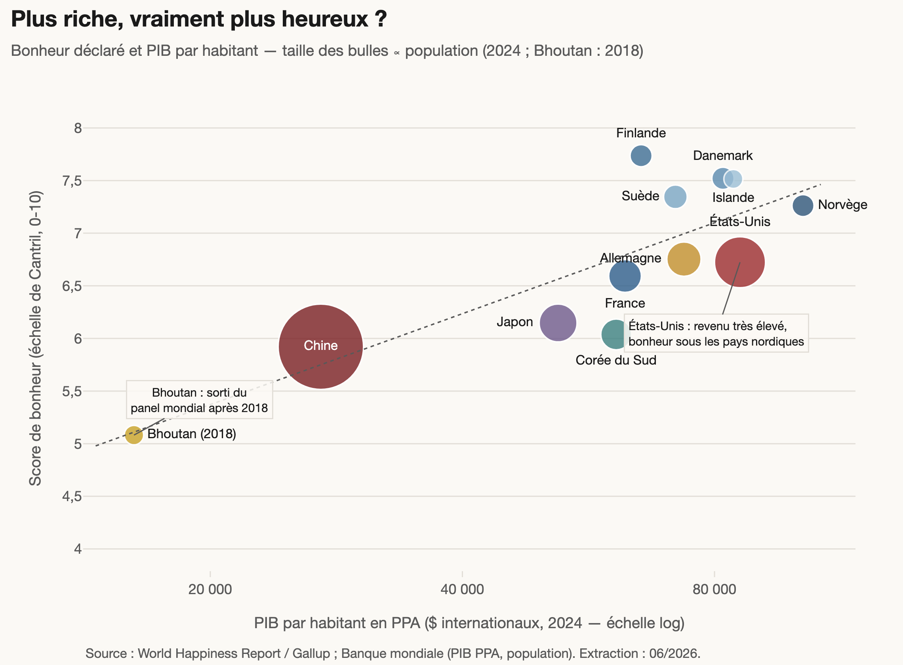
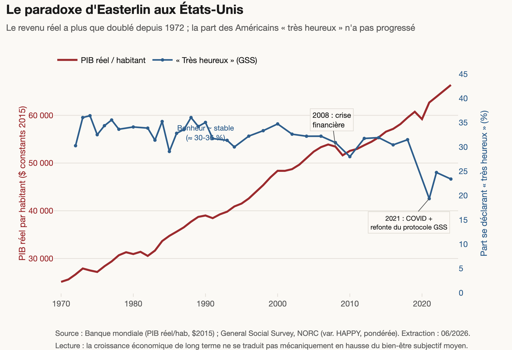
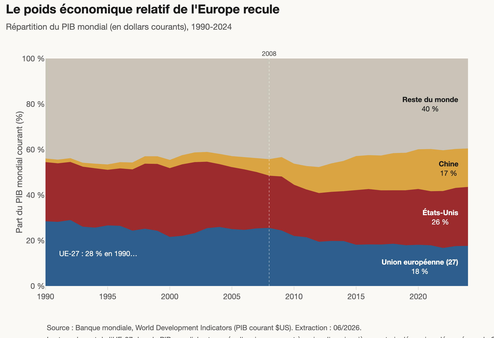
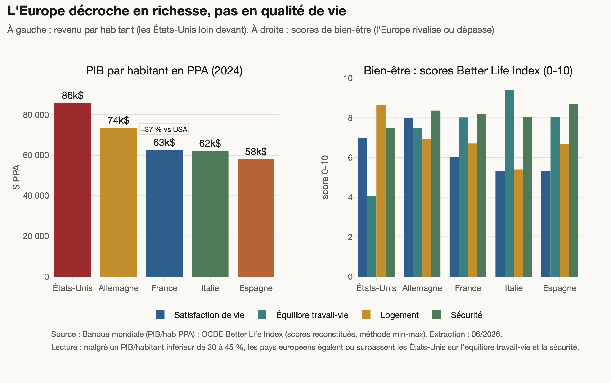
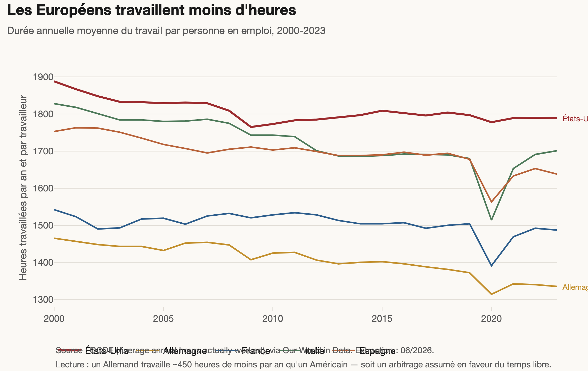
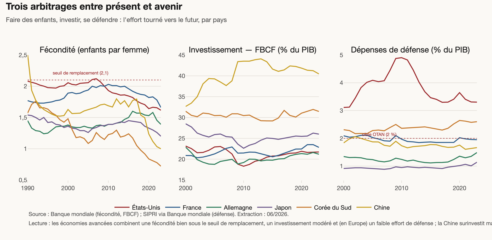
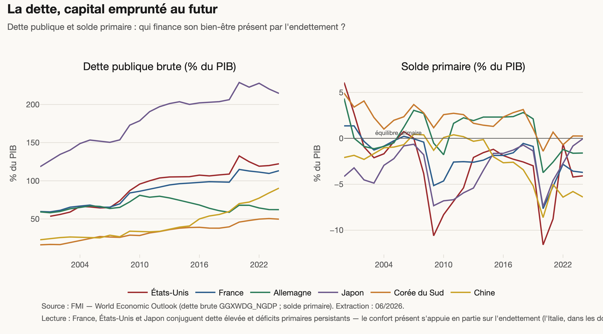

Documents de cadrage & pilotage :
Charte graphique ·
Proposition commerciale ·
Synthèse globale ·
Rapport de vérification ·
Documentation des sources ·
Guide de livraison
Axe 1 — Bonheur déclaré vs performance économique


Axe 2 — L'Europe heureuse et son déclin relatif



Axe 3 — Composants du bonheur et sous-jacents économiques


Axe 4 — Tensions bonheur individuel / prospérité collective

